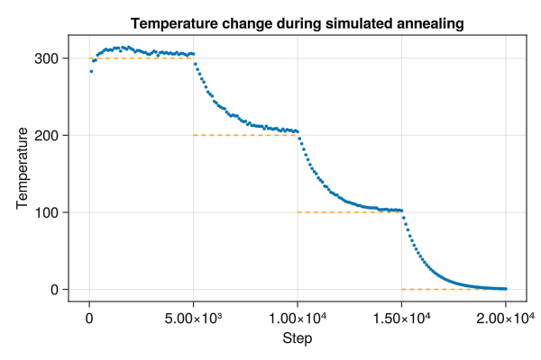
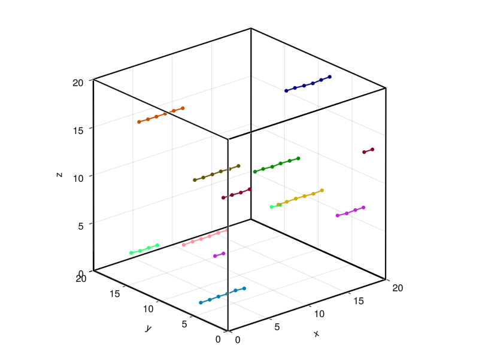
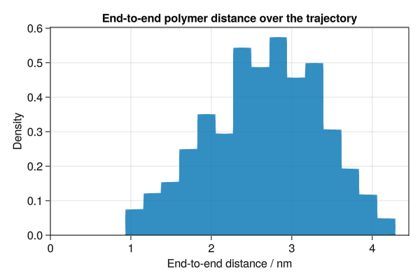
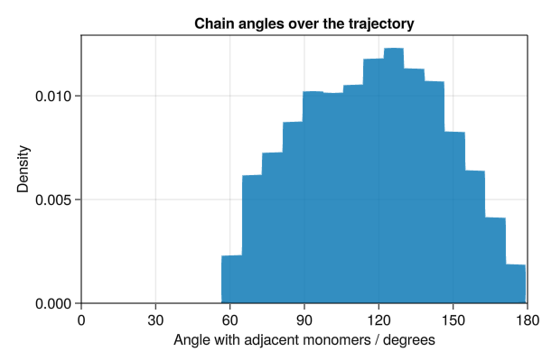

Molly examples
The best examples for learning how the package works are in the Molly documentation section. Here we give further examples showing what you can do with the package. Each is a self-contained block of code. Made something cool yourself? Make a PR to add it to this page.
Simulated annealing
You can change the thermostat temperature of a simulation by changing the simulator. Here we reduce the temperature of a simulation in stages from 300 K to 0 K.
using Molly
using GLMakie
data_dir = joinpath(dirname(pathof(Molly)), "..", "data")
ff = MolecularForceField(
joinpath(data_dir, "force_fields", "ff99SBildn.xml"),
joinpath(data_dir, "force_fields", "tip3p_standard.xml"),
joinpath(data_dir, "force_fields", "his.xml"),
)
sys = System(
joinpath(data_dir, "6mrr_equil.pdb"),
ff;
loggers=(temp=TemperatureLogger(100),),
)
minimizer = SteepestDescentMinimizer()
simulate!(sys, minimizer)
temps = [300.0, 200.0, 100.0, 0.0]u"K"
random_velocities!(sys, temps[1])
for temp in temps
simulator = Langevin(
dt=0.001u"ps",
temperature=temp,
friction=1.0u"ps^-1",
)
simulate!(sys, simulator, 5_000)
end
f = Figure(resolution=(600, 400))
ax = Axis(
f[1, 1],
xlabel="Step",
ylabel="Temperature",
title="Temperature change during simulated annealing",
)
for (i, temp) in enumerate(temps)
lines!(
ax,
[5100 * i - 5000, 5100 * i],
[ustrip(temp), ustrip(temp)],
linestyle="--",
color=:orange,
)
end
scatter!(
ax,
100 .* (1:length(values(sys.loggers.temp))),
ustrip.(values(sys.loggers.temp)),
markersize=5,
)
save("annealing.png", f)
Solar system
Orbits of the four closest planets to the sun can be simulated.
using Molly
using GLMakie
# Using get_body_barycentric_posvel from Astropy
coords = [
SVector(-1336052.8665050615, 294465.0896030796 , 158690.88781384667)u"km",
SVector(-58249418.70233503 , -26940630.286818042, -8491250.752464907 )u"km",
SVector( 58624128.321813114, -81162437.2641475 , -40287143.05760552 )u"km",
SVector(-99397467.7302648 , -105119583.06486066, -45537506.29775053 )u"km",
SVector( 131714235.34070954, -144249196.60814604, -69730238.5084304 )u"km",
]
velocities = [
SVector(-303.86327859262457, -1229.6540090943934, -513.791218405548 )u"km * d^-1",
SVector( 1012486.9596885007, -3134222.279236384 , -1779128.5093088674)u"km * d^-1",
SVector( 2504563.6403826815, 1567163.5923297722, 546718.234192132 )u"km * d^-1",
SVector( 1915792.9709661514, -1542400.0057833872, -668579.962254351 )u"km * d^-1",
SVector( 1690083.43357355 , 1393597.7855017239, 593655.0037930267 )u"km * d^-1",
]
body_masses = [
1.989e30u"kg",
0.330e24u"kg",
4.87e24u"kg" ,
5.97e24u"kg" ,
0.642e24u"kg",
]
boundary = CubicBoundary(1e9u"km")
# Convert the gravitational constant to the appropriate units
inter = Gravity(G=convert(typeof(1.0u"km^3 * kg^-1 * d^-2"), Unitful.G))
sys = System(
atoms=[Atom(mass=m) for m in body_masses],
pairwise_inters=(inter,),
coords=coords .+ (SVector(5e8, 5e8, 5e8)u"km",),
velocities=velocities,
boundary=boundary,
loggers=(coords=CoordinateLogger(typeof(1.0u"km"), 10),),
force_units=u"kg * km * d^-2",
energy_units=u"kg * km^2 * d^-2",
)
simulator = Verlet(
dt=0.1u"d",
remove_CM_motion=false,
)
simulate!(sys, simulator, 3650) # 1 year
visualize(
sys.loggers.coords,
boundary,
"sim_planets.mp4";
trails=5,
color=[:yellow, :grey, :orange, :blue, :red],
markersize=[0.25, 0.08, 0.08, 0.08, 0.08],
transparency=false,
)
Polymer melt
Here we use FENEBond, CosineAngle and LennardJones to simulate interacting polymers. We also analyse the end-to-end polymer distances and chain angles across the trajectory.
using Molly
using GLMakie
using Colors
using LinearAlgebra
# Simulate 10 polymers each consisting of 6 monomers
n_polymers = 10
n_monomers = 6
n_atoms = n_monomers * n_polymers
n_bonds_mon = n_monomers - 1
n_bonds_tot = n_bonds_mon * n_polymers
n_angles_mon = n_monomers - 2
n_angles_tot = n_angles_mon * n_polymers
starting_length = 1.1u"nm"
boundary = CubicBoundary(20.0u"nm")
# Random placement of polymer centers at the start
start_coords = place_atoms(n_polymers, boundary; min_dist=6.0u"nm")
# Polymers start almost completely extended
coords = []
for pol_i in 1:n_polymers
for mon_i in 1:n_monomers
push!(coords, start_coords[pol_i] .+ SVector(
starting_length * (mon_i - 1 - n_monomers / 2),
rand() * 0.1u"nm",
rand() * 0.1u"nm",
))
end
end
coords = [coords...] # Ensure the array is strongly typed
# Create FENEBonds between adjacent monomers
bond_is, bond_js = Int[], Int[]
for pol_i in 1:n_polymers
for bi in 1:n_bonds_mon
push!(bond_is, (pol_i - 1) * n_monomers + bi )
push!(bond_js, (pol_i - 1) * n_monomers + bi + 1)
end
end
fene_k = 250.0u"kJ * mol^-1 * nm^-2"
fene_r0 = 1.6u"nm"
bonds = InteractionList2Atoms(
bond_is,
bond_js,
[FENEBond(k=fene_k, r0=fene_r0, σ=1.0u"nm", ϵ=2.5u"kJ * mol^-1") for _ in 1:n_bonds_tot],
)
# Create CosineAngles between adjacent monomers
angle_is, angle_js, angle_ks = Int[], Int[], Int[]
for pol_i in 1:n_polymers
for bi in 1:n_angles_mon
push!(angle_is, (pol_i - 1) * n_monomers + bi )
push!(angle_js, (pol_i - 1) * n_monomers + bi + 1)
push!(angle_ks, (pol_i - 1) * n_monomers + bi + 2)
end
end
angles = InteractionList3Atoms(
angle_is,
angle_js,
angle_ks,
[CosineAngle(k=2.0u"kJ * mol^-1", θ0=0.0) for _ in 1:n_angles_tot],
)
atoms = [Atom(mass=10.0u"u", σ=1.0u"nm", ϵ=0.5u"kJ * mol^-1") for _ in 1:n_atoms]
# Since we are using a generic pairwise Lennard-Jones potential too we need to
# exclude adjacent monomers from the neighbor list
eligible = trues(n_atoms, n_atoms)
for pol_i in 1:n_polymers
for mon_i in 1:n_bonds_mon
i = (pol_i - 1) * n_monomers + mon_i
j = (pol_i - 1) * n_monomers + mon_i + 1
eligible[i, j] = false
eligible[j, i] = false
end
end
neighbor_finder = DistanceNeighborFinder(
eligible=eligible,
n_steps=10,
dist_cutoff=5.0u"nm",
)
sys = System(
atoms=atoms,
pairwise_inters=(LennardJones(use_neighbors=true),),
specific_inter_lists=(bonds, angles),
coords=coords,
boundary=boundary,
neighbor_finder=neighbor_finder,
loggers=(coords=CoordinateLogger(200),),
)
sim = Langevin(dt=0.002u"ps", temperature=300.0u"K", friction=1.0u"ps^-1")
simulate!(sys, sim, 100_000)
colors = distinguishable_colors(n_polymers, [RGB(1, 1, 1), RGB(0, 0, 0)]; dropseed=true)
visualize(
sys.loggers.coords,
boundary,
"sim_polymer.gif";
connections=zip(bond_is, bond_js),
color=repeat(colors; inner=n_monomers),
connection_color=repeat(colors; inner=n_bonds_mon),
)
logged_coords = values(sys.loggers.coords)
n_frames = length(logged_coords)
# Calculate end-to-end polymer distances for second half of trajectory
end_to_end_dists = Float64[]
for traj_coords in logged_coords[(n_frames ÷ 2):end]
for pol_i in 1:n_polymers
start_i = (pol_i - 1) * n_monomers + 1
end_i = pol_i * n_monomers
dist = norm(vector(traj_coords[start_i], traj_coords[end_i], boundary))
push!(end_to_end_dists, ustrip(dist))
end
end
f = Figure(resolution=(600, 400))
ax = Axis(
f[1, 1],
xlabel="End-to-end distance / nm",
ylabel="Density",
title="End-to-end polymer distance over the trajectory",
)
hist!(ax, end_to_end_dists, normalization=:pdf)
xlims!(ax, low=0)
ylims!(ax, low=0)
save("polymer_dist.png", f)
# Calculate angles to adjacent monomers for second half of trajectory
chain_angles = Float64[]
for traj_coords in logged_coords[(n_frames ÷ 2):end]
for pol_i in 1:n_polymers
for mon_i in 2:(n_monomers - 1)
angle = bond_angle(
traj_coords[(pol_i - 1) * n_monomers + mon_i - 1],
traj_coords[(pol_i - 1) * n_monomers + mon_i ],
traj_coords[(pol_i - 1) * n_monomers + mon_i + 1],
boundary,
)
push!(chain_angles, rad2deg(angle))
end
end
end
f = Figure(resolution=(600, 400))
ax = Axis(
f[1, 1],
xlabel="Angle with adjacent monomers / degrees",
ylabel="Density",
title="Chain angles over the trajectory",
)
hist!(ax, chain_angles, normalization=:pdf)
xlims!(ax, 0, 180)
ylims!(ax, low=0)
save("polymer_angle.png", f)
Density functional theory
DFTK.jl can be used to calculate forces using density functional theory (DFT), allowing the simulation of quantum systems in Molly. This example uses the DFTK.jl tutorial to simulate two silicon atoms with atomic units. A general interaction is used since the whole force calculation is offloaded to DFTK.jl.
using Molly
using DFTK
struct DFTKInteraction{L, A}
lattice::L
atoms::A
end
# Define lattice and atomic positions
a = 5.431u"Å" # Silicon lattice constant
lattice = a / 2 * [[0 1 1.]; # Silicon lattice vectors
[1 0 1.]; # specified column by column
[1 1 0.]];
# Load HGH pseudopotential for Silicon
Si = ElementPsp(:Si, psp=load_psp("hgh/lda/Si-q4"))
# Specify type of atoms
atoms_dftk = [Si, Si]
dftk_interaction = DFTKInteraction(lattice, atoms_dftk)
function Molly.forces(inter::DFTKInteraction, sys, neighbors=nothing)
# Select model and basis
model = model_LDA(inter.lattice, inter.atoms, sys.coords)
kgrid = [4, 4, 4] # k-point grid (Regular Monkhorst-Pack grid)
Ecut = 7 # kinetic energy cutoff
basis = PlaneWaveBasis(model; Ecut=Ecut, kgrid=kgrid)
# Run the SCF procedure to obtain the ground state
scfres = self_consistent_field(basis; tol=1e-5)
return compute_forces_cart(scfres)
end
atoms = fill(Atom(mass=28.0), 2)
coords = [SVector(1/8, 1/8, 1/8), SVector(-1/8, -1/8, -1/8)]
velocities = [randn(SVector{3, Float64}) * 0.1 for _ in 1:2]
boundary = CubicBoundary(Inf)
loggers = (coords=CoordinateLogger(Float64, 1),)
sys = System(
atoms=atoms,
general_inters=(dftk_interaction,),
coords=coords,
velocities=velocities,
boundary=boundary,
loggers=loggers,
force_units=NoUnits,
energy_units=NoUnits,
)
simulator = Verlet(dt=0.0005, remove_CM_motion=false)
simulate!(sys, simulator, 100)
values(sys.loggers.coords)[end]
# 2-element Vector{SVector{3, Float64}}:
# [0.12060853912863925, 0.12292128337998731, 0.13100409788691614]
# [-0.13352575661477334, -0.11473039463130282, -0.13189544838731393]Making and breaking bonds
There is an example of mutable atom properties in the main documentation, but what if you want to make and break bonds during the simulation? In this case you can use a PairwiseInteraction to make, break and apply the bonds. The partners of the atom can be stored in the atom type. We make a logger to record when the bonds are present, allowing us to visualize them with the connection_frames keyword argument to visualize (this can take a while to plot).
using Molly
using GLMakie
using LinearAlgebra
struct BondableAtom
i::Int
mass::Float64
σ::Float64
ϵ::Float64
partners::Set{Int}
end
struct BondableInteraction <: PairwiseInteraction
prob_formation::Float64
prob_break::Float64
dist_formation::Float64
k::Float64
r0::Float64
end
Molly.use_neighbors(::BondableInteraction) = true
function Molly.force(inter::BondableInteraction,
dr,
coord_i,
coord_j,
atom_i,
atom_j,
boundary)
# Break bonds randomly
if atom_j.i in atom_i.partners && rand() < inter.prob_break
delete!(atom_i.partners, atom_j.i)
delete!(atom_j.partners, atom_i.i)
end
# Make bonds between close atoms randomly
r2 = sum(abs2, dr)
if r2 < inter.r0 * inter.dist_formation && rand() < inter.prob_formation
push!(atom_i.partners, atom_j.i)
push!(atom_j.partners, atom_i.i)
end
# Apply the force of a harmonic bond
if atom_j.i in atom_i.partners
c = inter.k * (norm(dr) - inter.r0)
fdr = -c * normalize(dr)
return fdr
else
return zero(coord_i)
end
end
function bonds(sys::System, neighbors=nothing, n_threads::Integer=Threads.nthreads())
bonds = BitVector()
for i in 1:length(sys)
for j in 1:(i - 1)
push!(bonds, j in sys.atoms[i].partners)
end
end
return bonds
end
BondLogger(n_steps) = GeneralObservableLogger(bonds, BitVector, n_steps)
n_atoms = 200
boundary = RectangularBoundary(10.0)
n_steps = 2_000
temp = 1.0
atoms = [BondableAtom(i, 1.0, 0.1, 0.02, Set([])) for i in 1:n_atoms]
coords = place_atoms(n_atoms, boundary; min_dist=0.1)
velocities = [random_velocity(1.0, temp; dims=2) for i in 1:n_atoms]
pairwise_inters = (
SoftSphere(use_neighbors=true),
BondableInteraction(0.1, 0.1, 1.1, 2.0, 0.1),
)
neighbor_finder = DistanceNeighborFinder(
eligible=trues(n_atoms, n_atoms),
n_steps=10,
dist_cutoff=2.0,
)
simulator = VelocityVerlet(
dt=0.02,
coupling=AndersenThermostat(temp, 5.0),
)
sys = System(
atoms=atoms,
pairwise_inters=pairwise_inters,
coords=coords,
velocities=velocities,
boundary=boundary,
neighbor_finder=neighbor_finder,
loggers=(
coords=CoordinateLogger(Float64, 20; dims=2),
bonds=BondLogger(20),
),
force_units=NoUnits,
energy_units=NoUnits,
)
simulate!(sys, simulator, n_steps)
connections = Tuple{Int, Int}[]
for i in 1:length(sys)
for j in 1:(i - 1)
push!(connections, (i, j))
end
end
visualize(
sys.loggers.coords,
boundary,
"sim_mutbond.mp4";
connections=connections,
connection_frames=values(sys.loggers.bonds),
markersize=0.1,
)
Comparing forces to AD
The force is the negative derivative of the potential energy with respect to position. MD packages, including Molly, implement the force functions directly for performance. However it is also possible to compute the forces using AD. Here we compare the two approaches for the Lennard-Jones potential and see that they give the same result.
using Molly
using Zygote
using GLMakie
inter = LennardJones(force_units=NoUnits, energy_units=NoUnits)
boundary = CubicBoundary(5.0)
a1, a2 = Atom(σ=0.3, ϵ=0.5), Atom(σ=0.3, ϵ=0.5)
function force_direct(dist)
c1 = SVector(1.0, 1.0, 1.0)
c2 = SVector(dist + 1.0, 1.0, 1.0)
vec = vector(c1, c2, boundary)
F = force(inter, vec, c1, c2, a1, a2, boundary)
return F[1]
end
function force_grad(dist)
grad = gradient(dist) do dist
c1 = SVector(1.0, 1.0, 1.0)
c2 = SVector(dist + 1.0, 1.0, 1.0)
vec = vector(c1, c2, boundary)
potential_energy(inter, vec, c1, c2, a1, a2, boundary)
end
return -grad[1]
end
dists = collect(0.2:0.01:1.2)
forces_direct = force_direct.(dists)
forces_grad = force_grad.(dists)
f = Figure(resolution=(600, 400))
ax = Axis(
f[1, 1],
xlabel="Distance / nm",
ylabel="Force / kJ * mol^-1 * nm^-1",
title="Comparing gradients from direct calculation and AD",
)
scatter!(ax, dists, forces_direct, label="Direct", markersize=8)
scatter!(ax, dists, forces_grad , label="AD" , markersize=8, marker='x')
xlims!(ax, low=0)
ylims!(ax, -6.0, 10.0)
axislegend()
save("force_comparison.png", f)
Variations of the Morse potential
The Morse potential for bonds has a parameter a that determines the width of the potential. It can also be compared to the harmonic bond potential.
using Molly
using GLMakie
boundary = CubicBoundary(5.0)
dists = collect(0.12:0.005:2.0)
function energies(inter)
return map(dists) do dist
c1 = SVector(1.0, 1.0, 1.0)
c2 = SVector(dist + 1.0, 1.0, 1.0)
potential_energy(inter, c1, c2, boundary)
end
end
f = Figure(resolution=(600, 400))
ax = Axis(
f[1, 1],
xlabel="Distance / nm",
ylabel="Potential energy / kJ * mol^-1",
title="Variations of the Morse potential",
)
lines!(
ax,
dists,
energies(HarmonicBond(k=20_000.0, r0=0.2)),
label="Harmonic",
)
for a in [2.5, 5.0, 10.0]
lines!(
ax,
dists,
energies(MorseBond(D=100.0, a=a, r0=0.2)),
label="Morse a=$a nm^-1",
)
end
ylims!(ax, 0.0, 120.0)
axislegend(position=:rb)
save("morse.png", f)
Variations of the Mie potential
The Mie potential is parameterised by m describing the attraction and n describing the repulsion. When m=6 and n=12 this is equivalent to the Lennard-Jones potential.
using Molly
using GLMakie
boundary = CubicBoundary(5.0)
a1, a2 = Atom(σ=0.3, ϵ=0.5), Atom(σ=0.3, ϵ=0.5)
dists = collect(0.2:0.005:0.8)
function energies(m, n)
inter = Mie(m=m, n=n)
return map(dists) do dist
c1 = SVector(1.0, 1.0, 1.0)
c2 = SVector(dist + 1.0, 1.0, 1.0)
vec = vector(c1, c2, boundary)
potential_energy(inter, vec, c1, c2, a1, a2, boundary)
end
end
f = Figure(resolution=(600, 400))
ax = Axis(
f[1, 1],
xlabel="Distance / nm",
ylabel="Potential energy / kJ * mol^-1",
title="Variations of the Mie potential",
)
for m in [4, 6]
for n in [10, 12]
lines!(
ax,
dists,
energies(Float64(m), Float64(n)),
label="m=$m, n=$n",
)
end
end
xlims!(ax, low=0.2)
ylims!(ax, -0.6, 0.3)
axislegend(position=:rb)
save("mie.png", f)
Variations of the soft-core LJ potential
The soft-core Lennard-Jones potential is parameterised by three parameters $\alpha$, $\lambda$ and $p$. These parameters shift the value of $r_{ij}$ to $\left(r_{ij}^6 + \sigma_{ij} \alpha \lambda^{p} \right)^{\frac{1}{6}}$. This gives a soft core, i.e. the potential does not diverge for $r_{ij} \rightarrow 0$.
using Molly
using GLMakie
boundary = CubicBoundary(5.0)
a1, a2 = Atom(σ=0.3, ϵ=0.5), Atom(σ=0.3, ϵ=0.5)
dists = collect(0.05:0.005:0.8)
function energies(α, λ, p)
inter = LennardJonesSoftCore(α=α, λ=λ, p=p)
return map(dists) do dist
c1 = SVector(1.0, 1.0, 1.0)
c2 = SVector(dist + 1.0, 1.0, 1.0)
vec = vector(c1, c2, boundary)
potential_energy(inter, vec, c1, c2, a1, a2, boundary)
end
end
f = Figure(resolution=(600, 400))
ax = Axis(
f[1, 1],
xlabel="Distance / nm",
ylabel="Potential energy / kJ * mol^-1",
title="Variations of the soft-core Lennard-Jones potential",
)
for λ in [0.8, 0.9]
for α in [0.2, 0.4]
for p in [2]
lines!(
ax,
dists,
energies(α, λ, p),
label="α=$α, λ=$λ, p=$p",
)
end
end
end
lines!(ax, dists, energies(0, 1, 2), label="standard LJ potential")
ylims!(-5, 25)
axislegend(position=:rt)
save("lennard_jones_sc.png", f)
The form of the potential is approximately the same as standard Lennard-Jones for $r_{ij} > \sigma_{ij}$ if some fractional values are used for $\lambda$ and $\alpha$.